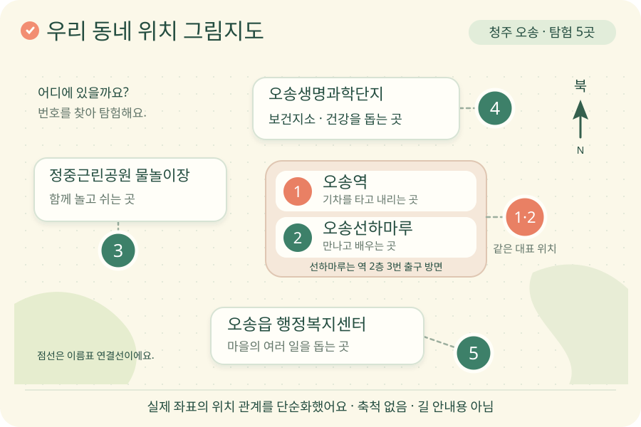

장소를 찾아요
지도의 동그란 표시를 눌러
오송의 장소를 만나 봐요.
기차가 달리고, 건강을 살피고, 이웃이 쉬어 가는 곳.
지도와 진짜 사진으로 오송 한 바퀴!
오늘의 탐험 미션 지도 속 다섯 장소를 만나고, 우리 이웃의 생활을 알아봐요.
✦ ✳ ✦천천히 보고, 생각하고, 나만의 이야기를 남겨요.
지도의 동그란 표시를 눌러
오송의 장소를 만나 봐요.
실제 사진에서 단서를 찾고
이웃이 하는 일을 알아봐요.
활동지에 그리고 쓰며
나의 생각을 표현해요.
가 보고 싶은 장소를 콕 눌러 볼까요?

카드를 눌러도 장소를 만날 수 있어요!
사진은 촬영 당시의 모습이에요. 지금 모습과 달라진 점이 있을 수 있어요.
오늘 만난 오송을 나의 말로 소개해요.
글 대신 종이 활동지에 그림을 그려도 좋아요. 학생 활동지는 A4 2쪽이에요.
버튼을 누른 뒤 인쇄 화면에서 ‘PDF로 저장’을 선택할 수 있어요. 빈 활동지는 위 PDF 버튼으로 바로 받아요.
오늘 만난 장소 중 한 곳을 떠올리며
친구와 생각을 나누어 보아요.
수업에 필요한 자료를 한곳에 모았어요.
2022 개정 교육과정 · 통합교과 슬기로운 생활 [2슬02-01] 우리가 살고 있는 마을과 사람들이 생활하는 모습을 살펴본다.
핵심 [2슬02-01] 우리가 살고 있는 마을과 사람들이 생활하는 모습을 살펴본다.
연계 성취기준
[2슬02-04] 궁금한 세계를 다양한 매체로 탐색한다.
[2바02-01] 공동체에서 내가 할 수 있는 일을 찾아보고 실천한다.
학습 목표 지도에서 마을 장소를 찾고, 사진과 설명을 통해 사람들의 생활을 말하며, 공동체를 위한 약속을 정합니다.
관찰 평가 ① 지도에서 두 장소 이상 찾기 ② 사진의 단서와 장소의 역할 설명하기 ③ 실천 가능한 약속 한 가지 표현하기.
2022 개정 교육과정의 1~2학년군 통합교과를 바탕으로 2학년 수준에 맞게 재구성했습니다. 사진 관찰과 상상한 내용을 구별하도록 도와주세요. 화면을 함께 보며 말로 대답하거나 짝과 이야기해도 됩니다. 인터넷이 어려우면 사진과 지도가 담긴 PDF로 수업할 수 있습니다.
지도: © OpenStreetMap 기여자. 지도 데이터는 ODbL로 제공됩니다. 표시 위치는 시설의 대표 좌표이며 출입구나 실제 보행 길을 뜻하지 않습니다.
무료 교육용 자료입니다. 사진마다 표시한 이용 조건을 따릅니다. 공공누리 제2유형은 상업적 이용이 금지되며, 제4유형은 상업적 이용과 변경이 금지됩니다. 사진은 전체 모습과 원래 비율을 유지해 보여 줍니다. 첫 화면의 마을 그림은 상상 그림이고 탐험 카드에는 실제 사진을 사용했습니다. 학생이 적은 내용은 서버로 전송하지 않습니다.